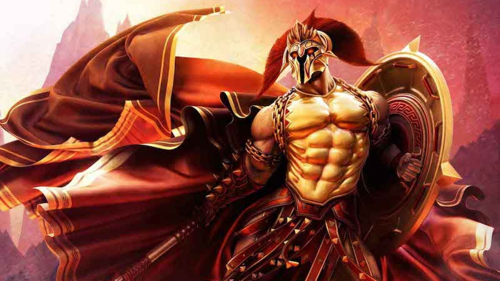
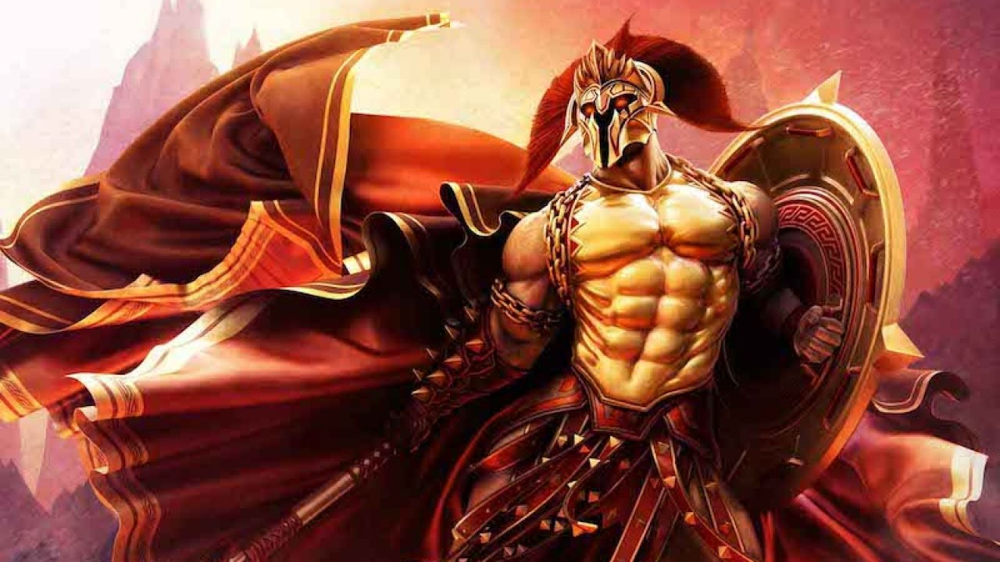
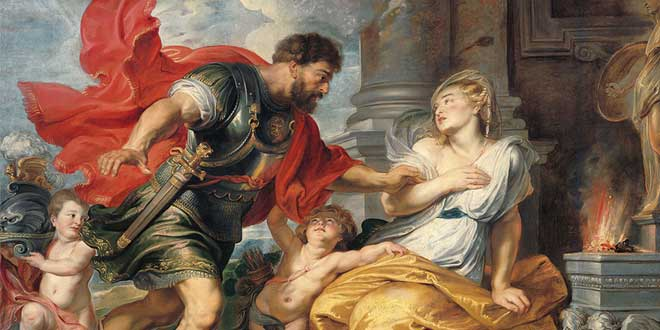

Ares
Introducción
Ares, hijo de Zeus y Hera, también llamado Marte en la mitología romana fue el dios de la guerra.Era uno de los 12 dioses del Olimpo y, al contrario que la dotada e inteligente Atenea, que también dirigía los asuntos de la guerra, se trataba de un dios sin modales, violento y agresivo, sin ningún aspecto positivo para la humanidad.También tenía muchos otros atributos: personificaba la valentía, la fuerza incansable, rey de la virilidad masculina, protector del olimpo y de los ejércitos, líder de los rebeldes, de los hombres justos, y ayudante de los débiles.En la guerra representa la brutalidad, la violencia, y horrores de las batallas.
 

Nacimiento
Hera huyó del Olimpo ante la envidia del nacimiento de la diosa de la sabiduría, Atenea, y se adentró en un templo consagrado a Cloris, diosa de las flores y de los jardines. Allí esta diosa aconsejó a Hera que cogiese una flor que se hallaba en los campos de Oleno. Hera, fue hacia aquellos campos, y vio la flor que le había indicado Cloris, era la flor más bonita que había visto jamás; que en realidad era Zeus en forma de flor. Al cogerla en su regazo, nació, el dios de la guerra, Ares. Cuando se iba, otra flor rozóle entre las piernas y apareció otro bebé, una fémina. Hera no quería a aquella bebé, pero se vio obligada a llevársela. Ambos fueron criados por Tero como su niñera y sanadora.
Algunos mitos
La Guerra de Troya
Durante a Guerra de Troya, Ares peleó para un bando y luego para el otro para recompensar el coraje de ambos lados: prometió a Atenea y a Hera que lucharía del lado de los aquellos junto a Aquiles, pero Afrodita y Apolo lo convencieron para que luchase con ellos del lado de Paris y los troyanos.En la batalla, Diomedes, sorprendido, vio a Ares luchando en el bando troyano, y ordenó a sus soldados la retirada. Hera vio la desproporción del combate y pidió a Zeus que interviniera para alejarlo del campo de batalla. Ares atacó a Diomedes con su lanza, pero Atenea desvió el ataque. Diomedes respondió con la pica y Atenea guió el golpe en dirección a Ares, quien cayó herido. Huyó al monte Olimpo para que su padre Zeus curara sus heridas, lo que obligó a los troyanos a replegarse.

Más tarde, Hera mencionó durante una conversación con Zeus que el hijo de Ares, Ascálafo a manos de Deífobo, había muerto, Ares rompió a llorar. Quiso volver a la batalla del lado de los aqueos. Atenea, ya pacificada con Ares, lo consoló y lo ayudó a quitarse la armadura. Más tarde, Ares intentó vengarse de Atenea, pero terminó herido de nuevo cuando esta lo golpeó con una piedra, cubriendo al caer con su cuerpo tumbando siete yugadas.
Muerte de Adonis
Un día mientras Adonis se encontraba en la superficie con Afrodita, la celosa Perséfone le contó a Ares que el muchacho le estaba quitando a su amante. Airado, el dios de laç guerra se convirtió en un jabalí furioso y Adonis murió destrozado por los colmillos de éste. Cuando Afrodita corrió a socorrerle se hirió con unas zarzas y sus gotas de sangre se transformaron en unas flores parecidas a las rosas que se llamaron adonis. La diosa roció néctar sobre el cuerpo de Adonis, de forma que cada gota de su sangre se convirtió en una flor roja llamada anémona.